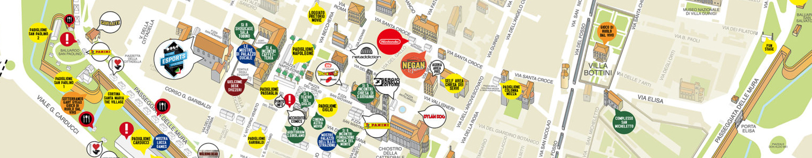
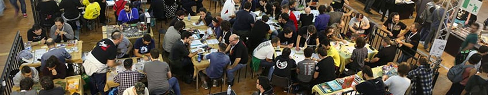

Si avvicina novembre, e con esso l’evento italiano più atteso da grandi e piccini. No, non sto parlando del cambio dell’ora (che pure ci è simpatico e ci fa dormire un’ora in più), e nemmeno di Halloween (per quanto si possano comunque trovare personaggi bizzarri vestiti di tutto punto), ma del Lucca Comics & Games, ovviamente!
Cosa c’è da dire su LC&G? Un po’ tutto e un po’ niente: una manifestazione così ricca, affollata e caotica, che ci vorrebbero pagine e pagine per poterla descrivere in pieno; ma non è questo il nostro obiettivo (per queste cose c’è il sito ufficiale).
Da appassionati giocatori da tavolo, però (e con qualche anno di Lucca sulle spalle), qualcosa di interessante da dire possiamo anche trovarla.
Al Comics & Games ci sono talmente tante cose da vedere, che passarci solo qualche ora sarebbe uno spreco.
Per i fortunati che vivono in Toscana e regioni limitrofe non è un gran problema, ma se siete distanti come noi trentini significa due cose: un “viaggio della speranza” di otto ore totali in pullman (necessariamente organizzato da qualche associazione ludica locale, anche se qualche navetta dalla vostra città potreste trovarla qui) o il pernottamento in zona.
Di gran lunga la soluzione più comoda, il pernottamento, richiede però un po’ di lungimiranza: dimenticatevi di dormire a Lucca, gli alloggi fanno sold-out direttamente da un anno all’altro. Conviene piuttosto scegliere una città vicina: Pisa, Viareggio, Pistoia, e da lì muoversi in treno o in macchina; per fortuna la stazione dei treni è a pochi passi dal centro: la troverete molto affollata ma comunque comoda da raggiungere.
Se invece siete tra quei fortunati che possono muoversi in auto e arrivare subito in fiera, buon per voi… ma aspettatevi comunque lunghe code. Personalmente trovo molto efficiente la via che collega Pontedera a Lucca: la maggior parte del traffico arriva in città da est e da ovest: arrivando da sud si trova pista libera fin dentro alla periferia della città.
C’è poi il discorso parcheggio; qui abbiamo due possibilità: utilizzare uno dei tanti parcheggi in città, molto comodi da raggiungere (al costo di €7 per l’intera giornata, potete prenotare il posto auto sul sito dedicato), oppure parcheggiare fuori Lucca ed utilizzare il servizio urbano o le navette: potete ad esempio parcheggiare gratuitamente a Capannori (in piazza Aldo Moro) e prendere l’autobus per raggiungere Lucca; gli anni scorsi era disponibile una navetta che al costo di €4 vi portava direttamente in città, speriamo che il Comune lo proponga anche quest’anno.

Una volta arrivati, di cose da fare ne avrete a bizzeffe, in primis però dovrete recuperare il vostro braccialetto.
Detto questo, LC&G è perfettamente godibile anche senza biglietto: il centro di Lucca non è di certo chiuso a chiave, e ci si può accedere liberamente, passeggiare per le vie, farsi i selfie coi cosplayers, acquistare qualche gadget nerd ai moltissimi stand sulle mura: anche senza biglietto, potrete passare un’intera giornata a Lucca e non riuscire comunque a vedere tutto.
Il biglietto è però necessario per poter accedere ai padiglioni – che ospitano gli autori più famosi, le mostre e gli eventi più importanti – e per partecipare ai contest e molto altro ancora. Nel nostro caso poi, l’area games è presso il padiglione Carducci, per cui il biglietto – col rispettivo braccialetto – è strettamente necessario. Attrezzatevi di conseguenza!
I consigli poi sono sempre gli stessi di quando siamo andati a Modena: scarpe comode, zaino in spalle per i numerosi acquisti, felpa (è pur sempre novembre) e una bottiglia d’acqua. Se non volete portarvi il pranzo da casa potete fermarvi ai numerosi punti ristoro disseminati per tutta la città: ce n’è davvero per tutti i gusti.
Gli appassionati di fumetti ne avranno fin sopra i capelli, sia del vecchio che del nuovo; ma Lucca Comics & Games è anche la patria dei collezionisti, di qualunque tipo: potete mettervi in coda per un autografo del vostro autore preferito, o provare a smerciare le vostre rarissime carte di Magic.
Se siete appassionati di cultura orientale potete poi tentare (è proprio il caso di dirlo) ad entrare in Japan Town: super affollata a ogni ora, il mio consiglio è di considerarla solo se siete dei veri nerd del Giappone: troverete poche mostre, pochi stand di valore (molto belli ma piuttosto costosi), e per il resto tante carabattole.
Infine, girovagando per Lucca sappiate che tre risorse saranno particolarmente scarse: i bagni, i bancomat, e la linea telefonica; noi giocatori siamo esperti nel gestire le nostre risorse, anche al di fuori dei worker placement, ma dovrete dare sfogo alle vostre migliori doti per non rimanere “a secco”. Ai bagni e al bancomat c’è sempre coda, quindi studiate bene sulla mappa dove si trovano e formulate una buona strategia; per quanto riguarda invece la linea telefonica, spesso non avrete connessione ad internet, per cui telefonate o SMS saranno i vostri soli amici. Oppure fate come noi: rintanatevi nell’area games e pensate solo a giocare.

Ma arriviamo al punto: il padiglione Carducci. Il santuario del gioco da tavolo di Lucca, vi inghiottirà per l’intera giornata; e tornerete l’indomani, nonostante l’abbiate girato in lungo e in largo, alla ricerca di qualche offerta perduta. Dotato di bagni e un punto ristoro piuttosto grande (all’aperto, che il meteo sia benevolo!), potrete semplicemente dedicarvi al gioco.
Tutte le case editrici più importanti – e molte delle minori – avranno la loro area dedicata, dove potrete provare le ultime novità, ovviamente seguiti da personale preparato e competente (e, man mano che si avvicina il termine della manifestazione, con sempre meno voce a disposizione); non mancheranno ovviamente i loro punti vendita, anche se non aspettatevi prezzi da urlo: a parte qualche rara occasione in stile “svuota magazzino” gli sconti difficilmente superano il 10% (eccezioni sono l’outlet di Giochi Uniti – dove però non troverete giochi “da classifica” – e il famoso 3x2 di Cranio Creations, che essendo applicabile solamente a tre giochi diversi vi richiederà un po’ di “strategia” per risparmiare: ne varrà la pena). Potreste piuttosto riuscire a mettere le mani su qualche promo interessante.
Al Carducci troverete anche veri e propri negozi di giochi da tavolo, non quindi monotematici sulla singola casa editrice; qui potreste riuscire a trovare quel gioco raro che cercate da sempre, o quell’edizione in lingua tedesca che vi farà risparmiare non poco. I prezzi variano di negozio in negozio, per cui cercate di girare il più possibile prima di acquistare (ma attenti a non farvi scappare le ultime copie rimaste!).
La vera risorsa di Lucca Comics & Games però, è che ci saranno proprio tutti: il posto perfetto per organizzare compravendita o scambi di usato, e risparmiare sulle spese di spedizione! Ad un mese da LC&G i vari gruppi online sono in fermento (Mercatino Ludico, Happy BoardGame, Mercatino BoardGame, giusto per citarne tre); cercate quel che più vi interessa, e concordate un incontro durante uno dei cinque giorni della manifestazione, quasi sicuramente avrete modo di incontrarvi!
Volutamente non mi sono soffermato sulla lista di giochi in uscita quest’anno a Lucca. Questo perché c’è chi ha già svolto un lavoro mastodontico a riguardo, per cui vi rimando immediatamente all’articolo di Giochi sul nostro tavolo: Guida alle uscite di Lucca (e dintorni). Non dimenticatevi poi di mettervi in fila per l’autografo dei numerosi ospiti di LC&G, big dell’ambiente ludico, la cui lista è disponibile nella sezione dedicata del sito della manifestazione.
Ma il gioco da tavolo non si limita al padiglione Carducci! Due sono i “punti caldi” da non farvi scappare: il primo è la linea diretta Essen - Lucca, organizzata da OxyzO Orizzonti Ludici (la sezione pisana della Tana dei Goblin); per poter provare le novità di Essen e Lucca dovrete recarvi presso la Biblioteca Civica Agorà di Lucca (in Via delle Trombe 6) nelle serate del 31 ottobre e 1-2-3 novembre. Il secondo punto interessante invece sarà presso Villa Gioiosa (in Viale Giosuè Carducci 111, fuori dalle mura, vicino a Porta San Pietro): si tratta del Bazaar dei giochi usati: chiunque potrà portare al bazaar il proprio usato, ricevere consigli sui prezzi di vendita, e lasciare il tutto in esposizione; che abbiate quindi una cantina da svuotare o una kallax da riempire, questo è il posto giusto (tutti i dettagli sulla pagina dedicata).
Speriamo di avervi dato qualche spunto interessante per le vostre giornate a Lucca. Se vi va di fare quattro chiacchiere e una partita assieme, noi saremo a zonzo per Lucca nelle giornate di venerdì 2 e sabato 3; non siate timidi e contattateci sulla nostra pagina Facebook o tramite il nostro bot Telegram!
Ovviamente, come per Modena, documenteremo tutto, quindi teneteci d’occhio!
Buon gioco a tutti!